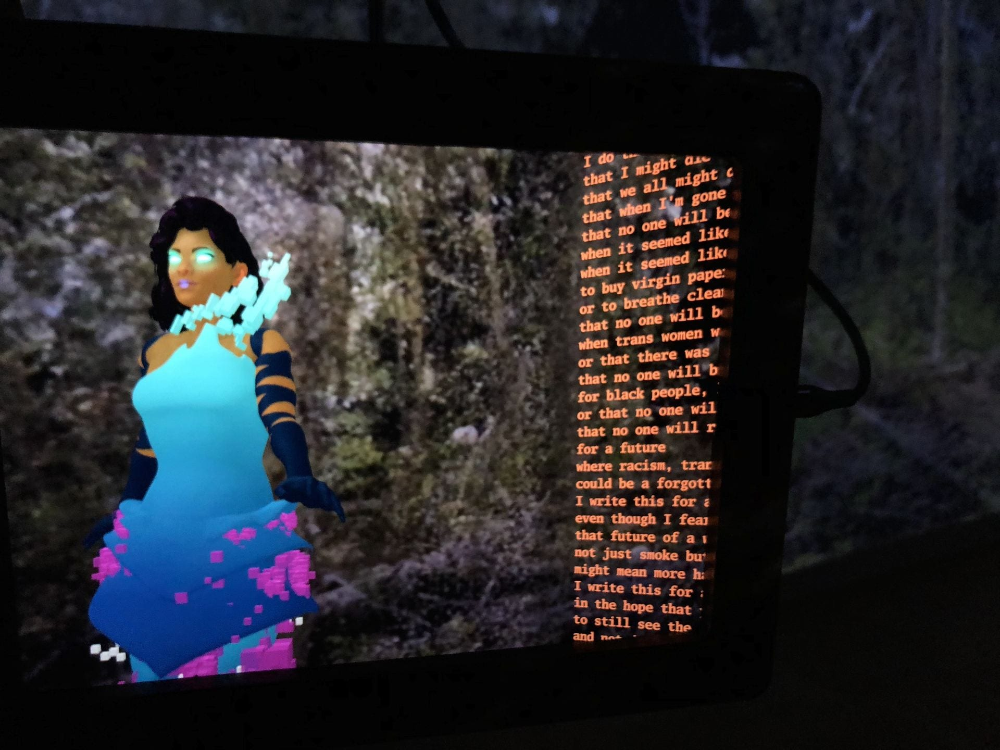

Artists
Barak adé Soleil

Barak adé Soleil’s creative practice draws from the African diaspora, queerness, disability culture, and postmodernism to speak to performativity and the labor of the body. Resisting pervasive notions that erase disabled and Deaf bodies from conceptions of the future, adé Soleil seeks to reflect how these communities can and will occupy space as we evolve as a society. In doing so, he uses performative abstract markings, American Sign Language, access aesthetics, and reframed symbolism. For Refiguring the Future, adé Soleil has produced site-specific markings that he describes as “performative impressions that center disabled and Deaf folx through an intersectional lens.” Also included in the exhibition is a video made in collaboration with Deaf Spectrum, Toronto, which features Nur Abdulle and rethinks signing as a process of mark-making.
Barak adé Soleil is the founder of D UNDERBELLY, an interdisciplinary network of artists of color. He is the recipient of the prestigious Katherine Dunham Choreography award given by New York’s AUDELCO for excellence in Black Theatre. adé Soleil is also the recipient of a 3Arts Robert Rauschenberg Residency Fellowship (2017); an Art Matters Foundation Award (2017); and a 3Arts Foundation Award (2016). His recent performances include from here to there (2018), presented during the exhibition Chicago Disability Activism, Arts & Design, 1970s to Today at Gallery 400, University of Illinois at Chicago; and a series of movements (2018), presented at the 7a*11d International Festival of Performance Art, Toronto and for VAE’s Everyday Series at Raleigh Contemporary Museum of Art, North Carolina. Currently based in Chicago, adé Soleil works globally and engages with distinct and intersectional communities across the Americas, Europe, and Africa.
Morehshin Allahyari

Morehshin Allahyari’s ongoing work, She Who Sees the Unknown (2017–present), addresses digital colonialism and “refiguring” from a feminist and decolonial position. Researching female monsters, jinn, and dark goddesses of Middle-Eastern origin, Allahyari devises narratives through poetic-speculative storytelling to re-appropriate traditional mythologies. In her installation She Who Sees the Unknown: The Laughing Snake, Allahyari builds upon the myth of the jinn, a monstrous creature in Arabian mythology, to draw viewers into an intimate, nonlinear narrative that explores gender and sexual oppression in the Middle East. Originally found in the Arabic manuscript Kitab al-bulhan (Book of Wonders), the myth of the Laughing Snake presents a destructive narrative in which a female figure goes on a murderous spree and takes over a city. After numerous failed attempts, an old man finally destroys her by holding up a mirror, causing her to laugh so hard at her reflection that she dies.
She Who Sees the Unknown: The Laughing Snake uses mirrors to create an enclosed and distorted space. The installation includes a 3D sculpture of the Laughing Snake suspended nearby a large-scale touch screen, which presents the online portal to the work. The net-art component of She Who Sees the Unknown: The Laughing Snake repurposes the origin myth, unfolding through a series of hypertexts and images that offer a semi-fictionalized account of the artist’s coming of age in Tehran, Iran, in the 1980s and 1990s. As this narrative evolves, the snake emerges as a complex figure, drawing viewers into distorted visions of femaleness and refracting images of otherness and monstrosity. Continued development of She Who Sees the Unknown is supported by a joint commission from the Whitney Museum of American Art, New York; the Liverpool Biennale; and the Foundation for Art and Creative Technology (FACT), Liverpool; as well as a 2018 Rhizome Commission.
Morehshin Allahyari is a media artist, activist, and educator who uses computer modeling, 3D scanning, and digital fabrication techniques to explore the intersection of art and activism. Born and raised in Tehran, she moved to the United States in 2007, where she currently engages with technology as a philosophical tool set to reflect on objects and as a poetic means to document our personal and collective struggles in the twenty-first century. Allahyari’s recent residencies and awards include a residency at Pioneer Works, New York; a research residency at Eyebeam, New York; and a sculpture award from the Institute of Digital Art, Ulm, Germany. Allahyari has exhibited her work at the Whitney Museum of American Art, the Centre Pompidou, Paris, and the Venice Architecture Biennale, among other venues. Allahyari received an MFA at the University of North Texas, an MA at University of Denver, and a BA at the University of Tehran.
Lee Blalock
Lee Blalock’s multidisciplinary practice addresses the limits and future extensions of the body as enabled by emerging technology. Through performance, painting, and programming, she imagines the liberating potential of other worlds, bodies, and systems to “express all that is censored in the performance of everyday life.” sy5z3n_4: Medi(a)tation for Virtual Respiration replaces the natural act of breathing with a computational system of sound, data, and image, removing breath from the body. Here, fifty-six resin Buddha statues—modified with toy robot parts and outfitted with tambourine jingles, solenoids (coils of wire used as electromagnets), and LEDs—perform behaviors choreographed through custom software designed by the artist. Emphasizing the circular nature of breath, the Buddha statues are installed in a circle on a square pedestal, and surround a small monitor playing a video of a meditating cybermonk who performs their own algorithm. In sy5z3n_4: Medi(a)tation for Virtual Respiration, Blalock explores the dynamic form meditation can take when it is surrounded by signal and noise.
Lee Blalock is a Chicago-based artist and educator who presents alternative and hyphenated
states of being through technology-mediated processes. Inspired by science fiction, futurism,
and technology, her work is an exercise in body modification by way of amplified behavior or "change-of-state." Blalock also works under the moniker L[3]^2, whose most recent live work embraces noise and fissure as a natural state of being for bodies living in the information age. Superimposing custom module-based "Instr/augment" systems (what the artist calls “sy5z3ns”) onto performers, L[3]^2 creates conditions for meditation through generative and repetitive behavior. Blalock is an Assistant Professor in the Art and Technology Studies Department at the School of the Art Institute of Chicago. She holds an MFA from the School of the Art Institute of Chicago and a BS from Spelman College, Atlanta.
Zach Blas

Zach Blas’s three-channel video installation presented in Refiguring the Future includes works from Blas’s series Contra-Internet, 2014–18. Consisting of a queer science-fiction film installation that includes live action and CGI, blown-glass sculptures, and a single-edition publication,Contra-Internet confronts the transformation of the internet into an instrument for state oppression and accelerated capitalism. Invoking a practice of utopian plagiarism,Contra-Internetappropriates queer and feminist methods to speculate on internet futures and network alternatives. At the center of Blas’s triptych is the dance scene from his short film Jubilee 2033, which is a re-imagining of filmmaker Derek Jarman’s 1978 queer punk film Jubilee. Starring Susanne Sachsse and the performance artist Cassils, Jubilee 2033 follows author Ayn Rand (Susanne Sachsse) and members of her Collective, including economist Alan Greenspan, on an acid trip in 1955. Jubilee 2033 was commissioned by Gasworks, London; Art in General, New York; and MU, Eindhoven, the Netherlands.
Zach Blas is an artist, filmmaker, and writer whose practice spans technical investigation, theoretical research, conceptualism, performance, and science fiction. His practice engages with technology, queerness, and politics to question the underlying structures of contemporary technologies. He has exhibited, lectured, and held screenings internationally, including at the Gwangju Biennale; the 68th Berlin International Film Festival; Art in General, New York; Van Abbemuseum, Eindhoven, the Netherlands; and Museo Universitario Arte Contemporáneo, Mexico City. Blas’s writing has been widely published including in You Are Here: Art After the Internet(Cornerhouse Books); Queer: Documents of Contemporary Art(The MIT Press and Whitechapel Gallery); and e-flux journal. He is a Lecturer in the Department of Visual Cultures at Goldsmiths, University of London, and a 2018–20 Arts and Humanities Research Council Leadership Fellow.
micha cárdenas and Abraham Avnisan

Sin Sol/No Sun is an immersive augmented reality game in which players experience a devastating environmental event, and must escape massive wildfires. The work explores the complex intersections of climate change, gender, disability, immigration, and mental health to consider how climate change disproportionately affects marginalized communities. The game centers around Aura, a trans-Latinx artificial intelligence hologram. From her vantage point fifty years in the future, she tells the narrative of the environmental collapses that have occurred in her past, which is our present. Aura is joined by her dog, Roja, who leads players on a journey to escape the wildfires and to find oxygen capsules containing poetry. These poems reveal the story to players as they progress through the game. The environments in the game, which also functions as an environmental archiving project, include actual 3D scans from present-day forests in the Pacific Northwest of the United States.
micha cárdenas is an artist and theorist who completed her Ph.D. in Media Arts + Practice in the School of Cinematic Arts at the University of Southern California. cárdenas is writing a new algorithm for gender, race, and technology. Her book in progress, Poetic Operations, proposes algorithmic analysis as a means to develop a trans-of-color poetics. cárdenas’s co-authored books The Transreal: Political Aesthetics of Crossing Realities (2012) and Trans Desire / Affective Cyborgs (2010) were published by Atropos Press. The recipient of several awards including the Creative Award from the Gender Justice League (2016) and the inaugural James Tiptree Jr. fellowship (2014), cárdenas has presented her work at the Museum of Contemporary Art, Chicago; the Zeppelin Museum Friedrichshafen, Germany; the Henry Art Gallery, University of Washington, Seattle; the Museum of Modern Art, New York; and Centro Cultural del Bosque, Mexico City, among numerous other venues. cárdenas is Assistant Professor of Art & Design: Games + Playable Media at the University of California, Santa Cruz. She is a first generation Colombian American, born in Miami.
Abraham Avnisan is an interdisciplinary artist, writer, and educator whose work is situated at the intersection of image, text, and code. He creates artist’s books, applications for mobile devices, and mixed reality performances that seek to subvert dominant narratives through embodied encounters with language, history, and philosophy. Avnisan teaches creative writing, new media art, and interactive media design as an Artist-in-Residence in the School of Interdisciplinary Arts & Sciences at University of Washington Bothell. He has presented his work at numerous institutions including at the Niels Bohr Institute, Copenhagen; the Henry Art Gallery, University of Washington, Seattle; the Chicago Architecture Biennial; and at Post-Screen: International Festival of Art, New Media, and Cybercultures, Lisbon. Avnisan work has been widely published, appearing in INDEX Vol. 6: An Annual Document of Performance Practice; the Electronic Literature Collection, Volume 3; Stonecutter; and The Poetry Project Newsletter, among others.
shawné michaelain holloway

.Scheduled(VariableRatio):secondary-conditioned- immediateReinforcement(s)- handlerSearch1_DrillAndPractice.exe_Companion4.1is part of the The Chambers Series (2017–present), which is comprised of printed scores and their partner publications. Each score is set up to be read and played out as a performance (called a “scene”) creating an intimate moment for a single actor to explore the BDSM kinks illustrated in holloway’s work. Using an invented symbol-based language inspired by graphic notation—the representation of written music by visual symbols that are outside of standard music notation—each score is built in ten parts. The score’s partner publication, The Companion, is a .zipfile-based reader that incorporates multimedia files that viewers must play, read, or solve.
.Scheduled(VariableRatio):secondary-conditioned- immediateReinforcement(s)- handlerSearch1_DrillAndPractice.exe_Companion4.1 is inspired by Donna Haraway’s book The Companion Species Manifesto: Dogs, People, and Significant Otherness and is a score in celebration of puppy play. Often not sexual in nature, puppy play involves one person taking on the role of the pup, while the other person takes on the role of the trainer, acting out a scenario not unlike a human training a dog or a person programming a computer. The score is installed on a plinth placed on the floor of the gallery with the command “KNEEL” installed in vinyl directly in front of it, prompting the viewer to submit in order to engage with the work.
shawné michaelain holloway uses sound, video, and performance to shape the rhetoric of technology and sexuality into tools for exposing structures of power. She has spoken and exhibited at institutions internationally, including the New Museum, New York; Sorbus Galleria, Helsinki; The Kitchen, New York; the Institute of Contemporary Arts, London; and the Museum of Contemporary Art Chicago. holloway teaches digital publishing theory and practice in the New Arts Journalism department at the School of the Art Institute of Chicago. Her books (- - -), i'd lie if i could even, and no separation were published in 2018 as part of the TOO OFTEN IN THE DARK series, an ode to bondage, refusal, and wild women. holloway is also a sex educator, teaching classes and writing about intersectional approaches to exploring our bodies and our kinks.
In Her Interior

Her Eyes Were As Black As Coal… is a new work by the Australian collective In Her Interior (IHI), comprised of Virginia Barratt and Francesca da Rimini. Originating from a “mother” script that the artists created through experimental constraint-based writing, this installation offers expanded ways to see, so that we may better comprehend the interdependencies of our existence and reflect on what is needed for us to collectively thrive. Co-creation is essential to IHI’s practice, not just between Barratt and da Rimini, but also between IHI and others connected ancestrally to the land and materials the artists use. This approach to making provides a rich basis for experimentation with form and methodology, embracing multiple creative modalities and perspectives, and creating an open system of doing-with-others that prioritizes support and survival. IHI believes this is the most appropriate way to pursue a creative life in times of precarity, and is concerned with cultivating creative practices that disrupt capitalism’s commodification of the artist. Her Eyes Were As Black As Coal…was created in collaboration with Ashley Haywood (alembic ceramicist) and Annie Wright (hat sculptor) and is supported by the ActNow Theatre's MakeSpace.
Formed in 2015, IHI co-creates and performs live works of spoken, sung, and recorded text and video within site-specific installation environments. As two of the four cofounders of cyber-feminist group VNS Matrix (est. 1991), da Rimini and Barratt have contributed to critiques of gender and technology for over three decades. In 2016, on the occasion of the 25th anniversary of VNS Matrix’s A Cyberfeminist Manifesto for the 21st Century, the group wrote and performed a new text, titled “A Tender Hex for the Anthropocene,” and curated a special section on affective labor for Runway magazine.
This project has been assisted by the Australian Government through the Australia Council for the Arts, its arts funding and advisory body.
Mary Maggic
“What if it were possible to synthesize hormones in the kitchen?” This is the question Mary Maggic’s speculative work Housewives Making Drugs addresses. Set as a fictional cooking show—part Martha Stewart and part Martha Rosler—Housewives Making Drugs is from Maggic’s larger project Open Source Estrogen, which generates DIY protocols for the extraction and detection of the estrogen hormone from bodies and environments, demonstrating its micro-performativity and potential for gender-hacking.
Employing an over-the-top performativity, Housewives Making Drugs stars two trans-femme hosts, Maria and Maria, who teach the audience how to cook their own hormones step-by-step through a simple “urine-hormone extraction recipe.” At the same time, they banter wittily about body and gender politics, institutional access to hormones, and the problems of heteronormative society. Set in the domestic and politicized space of the kitchen, Housewives Making Drugs demystifies scientific protocols—removing them from their patriarchal and capitalist power structures to stage a scenario where the housewife-hacker gains endocrinological knowledge and body/gender sovereignty while subverting the traditional gendered norms typified by the kitchen.
Mary Maggic is a non-binary artist working at the intersection of biotechnology, cultural discourse, and civil disobedience. Their work includes documentary video, scientific methodology, public workshopology, performance, and large-scale installation. Maggic holds a BSA in Biological Science and Art from Carnegie Mellon University, Pittsburgh, and an MS in Media Arts and Sciences from Massachusetts Institute of Technology, Cambridge. They have exhibited and performed at numerous institutions, including Haus der Kulturen der Welt, Berlin; OK Center, Linz, Austria; Haus der elektronischen Kunst, Basel; Jeu de Paume, Paris; the Institute of Contemporary Arts, London; and Spring Workshop, Hong Kong.
Lauren McCarthy
 SOMEONE is an expansion on McCarthy’s previous work LAUREN, in which the artist attempted to become a human version of Amazon’s home-intelligence device, Alexa. LAUREN was a durational performance lasting several days that started with an installation of custom-designed, networked smart devices, including cameras, microphones, lights, and outlets, in participants’ homes. The networked installation enabled McCarthy to remotely watch over participants 24/7 and control many aspects of their environments. With LAUREN, McCarthy aimed to be superior to an artificial intelligence assistant, her humanity allowing her to better relate to participants’ needs. Ultimately, the relationship between the artist and the participants fell into an ambiguous space between that of human-machine and human-human.
SOMEONE takes the issues raised by LAUREN—intimacy versus privacy, convenience versus agency, and the role of human labor in the future of automation, among others—a step further by asking exhibition visitors to participate in the responsibilities of being a home-intelligence device. Selected by an open call, the four participants in SOMEONE span a range of ages, backgrounds, living situations, and perspectives on smart-home technology. McCarthy has worked with the participants to build custom smart-home configurations using a variety of devices to capture each of their personal needs. The four participants’ homes are remotely watched and controlled via a command center installed within the gallery. From their connected homes, the participants can directly request an action by calling out for “SOMEONE.” The request will be heard and seen from the command center in the gallery, thus inviting exhibition visitors to respond to the home observation and control—stepping in as the human intelligence.
SOMEONE was created with support from a Google Focused Research Award and the Harvestworks New Works Residency. Software and hardware developed by Harvey Moon and Josh Billions. Interface developed by Lauren McCarthy. Furniture designed in collaboration with and fabrication by Lela Barclay de Tolly. Smart home participant collaborators include Valeria Haedo, Adelle Lin, Amanda McDonald Crowley, and Ksenya Samarskaya.
Lauren McCarthy is a Los Angeles-based artist whose work examines how issues of surveillance, automation, and networks affect our social relationships. She is the creator of p5.js, an open source platform for learning creative expression through code online. McCarthy’s work has been exhibited internationally, including at the Barbican Centre, London; Ars Electronica, Linz, Austria; Conflux Festival, New York; SIGGRAPH; Onassis Cultural Center, New York; IDFA DocLab, Amsterdam; and the Japan Media Arts Festival, Tokyo. McCarthy is an Assistant Professor at University of California, Los Angeles Design Media Arts program. She is a Sundance Institute Fellow and was previously a resident at CMU STUDIO for Creative Inquiry at the College of Fine Arts, Carnegie Mellon University, Pittsburgh; Eyebeam, New York; Interactive Telecommunications Program (ITP) at New York University; and Ars Electronica / QUT TRANSMIT³.
SOMEONE is an expansion on McCarthy’s previous work LAUREN, in which the artist attempted to become a human version of Amazon’s home-intelligence device, Alexa. LAUREN was a durational performance lasting several days that started with an installation of custom-designed, networked smart devices, including cameras, microphones, lights, and outlets, in participants’ homes. The networked installation enabled McCarthy to remotely watch over participants 24/7 and control many aspects of their environments. With LAUREN, McCarthy aimed to be superior to an artificial intelligence assistant, her humanity allowing her to better relate to participants’ needs. Ultimately, the relationship between the artist and the participants fell into an ambiguous space between that of human-machine and human-human.
SOMEONE takes the issues raised by LAUREN—intimacy versus privacy, convenience versus agency, and the role of human labor in the future of automation, among others—a step further by asking exhibition visitors to participate in the responsibilities of being a home-intelligence device. Selected by an open call, the four participants in SOMEONE span a range of ages, backgrounds, living situations, and perspectives on smart-home technology. McCarthy has worked with the participants to build custom smart-home configurations using a variety of devices to capture each of their personal needs. The four participants’ homes are remotely watched and controlled via a command center installed within the gallery. From their connected homes, the participants can directly request an action by calling out for “SOMEONE.” The request will be heard and seen from the command center in the gallery, thus inviting exhibition visitors to respond to the home observation and control—stepping in as the human intelligence.
SOMEONE was created with support from a Google Focused Research Award and the Harvestworks New Works Residency. Software and hardware developed by Harvey Moon and Josh Billions. Interface developed by Lauren McCarthy. Furniture designed in collaboration with and fabrication by Lela Barclay de Tolly. Smart home participant collaborators include Valeria Haedo, Adelle Lin, Amanda McDonald Crowley, and Ksenya Samarskaya.
Lauren McCarthy is a Los Angeles-based artist whose work examines how issues of surveillance, automation, and networks affect our social relationships. She is the creator of p5.js, an open source platform for learning creative expression through code online. McCarthy’s work has been exhibited internationally, including at the Barbican Centre, London; Ars Electronica, Linz, Austria; Conflux Festival, New York; SIGGRAPH; Onassis Cultural Center, New York; IDFA DocLab, Amsterdam; and the Japan Media Arts Festival, Tokyo. McCarthy is an Assistant Professor at University of California, Los Angeles Design Media Arts program. She is a Sundance Institute Fellow and was previously a resident at CMU STUDIO for Creative Inquiry at the College of Fine Arts, Carnegie Mellon University, Pittsburgh; Eyebeam, New York; Interactive Telecommunications Program (ITP) at New York University; and Ars Electronica / QUT TRANSMIT³.
Claire Pentecost and Martha Pentecost

Set in our current moment, in a coastal town in South Carolina, The Spirit of the Water Bear
is a young adult novel that explores the devastating effects of a hurricane as experienced by the 15-year-old protagonist of the story, who is an activist and environmentalist urgently trying to get her community to consider important global issues, especially climate change. By anchoring the book in the present, the authors call attention to the irreversible damage that climate change has already caused and to the urgency for global awareness and action to slow its destruction. This is the first young adult fiction book the Pentecost sisters have written, and it is also their first formal collaboration.
Five hundred copies of The Spirit of the Water Bear are displayed in the gallery as part of Refiguring the Future, and in the spirit of access and sharing, these copies are available for visitors to take home with them.
Claire Pentecost is an artist, writer, and educator. Her projects often address the contested line between the natural and the artificial, focusing on food, agriculture, bioengineering, and anthropogenic changes. Pentecost has shown work in numerous exhibitions and venues, including Documenta(13), Kassel; the 13th Istanbul Biennial; the DePaul Art Museum, Chicago; and the Third Land Art Mongolia Biennial. She is a founding member of Deeptime Chicago and of Watershed Art and Ecology. She is a professor at the School of the Art Institute of Chicago.
Martha Pentecost lives in Durham, NC, where she writes and works with a number of organizations including Prisoner Visitation and Support, Haw River Assembly, Paperhand Puppet Intervention, Fullframe Documentary Film Festival, Durham Community Land Trust, and Trees Durham.
Sonya Rapoport

Sonya Rapoport’s interactive, computer-mediated participation performance Biorhythm, from 1981, is a data-oriented yet playful exploration of the human body as computer. The work was prompted by Rapoport’s interest in Biorhythm Theory, which gained popularity in the late 1970s. The theory posits the existence of three different biorhythm cycles, each influenced by an aspect of human behavior: one cycle influences physical behavior; one cycle influences emotions; and one cycle influences intellectual functions. In an early anticipation of the Quantified-Self—self-knowledge through self-tracking—Rapoport used a commercially available biorhythm kit to predict and record her daily physical, emotional, and cognitive cycles throughout the year 1980. On an oversize calendar, she made small-scale daily collages from the ephemera of her everyday life and paper records of her art practice, creating an autobiographical portrait.
Rapoport’s meticulous process of gathering data and research on the origins of Biorhythm Theory led her to conclude that her cycle was not predicted accurately using this method, exposing the potential failures and biases of computerized data collection. In the annotated plotter print Biorhythm Sheet 1: Identical Prediction/Action Days, 1981, she charted her data on a spiral graph, circling the thirteen days that the biorhythm prediction matched her “actions.” In an artist’s book, she graphed her own biorhythm data in comparison to the computerized predictions, which appear as sine waves. Along with this data, the artist’s book includes color snapshots of her calendar collages printed on acetate. Also included in Refiguring the Future is video documentation of the Biorhythm Audience Participation Performance (Works Gallery, San Jose, 1983) and The Computer Says I Feel… (San Francisco Arts Commission Gallery, 1984).
Sonya Rapoport (b. 1923, Brookline, MA; d. 2015, Berkeley, CA) is a conceptual artist best known for a visual language that appropriates the aesthetics of science and digital media. Her work is characterized by groundbreaking experimentation with computers and data collection; collaboration with eminent scientists and experts in the humanities; and a profound feminist mission marked by strategic forays into male-dominated fields. Rapoport had an active role in MIT Press’ art, science, and technology journal Leonardo. She received her MA in painting from University of California, Berkeley, in 1949, and was among the first women to do so. Rapoport’s work has been included in numerous exhibitions, including the Whitney Biennial, New York, 2006; Bienal de Arte, Buenos Aires, 2002; and Documenta 8, Kassel, 1987. Rapoport’s work was the subject of late-career retrospective exhibitions at KALA Art Institute, Berkeley, 2011; Mills College Art Museum, Oakland, 2012 (accompanied by the exhibition catalogue Pairing of Polarities: The Life and Art of Sonya Rapoport); and the Fresno Art Museum, Fresno, CA, 2013. Her archives are preserved in the Bancroft Library at the University of California, Berkeley.
Sputniko! and Tomomi Nishizawa
Sputniko! and Tomomi Nishizawa’s first collaboration transports us to an imaginary academy, the titular Tokyo Medical University for Rejected Women. The work responds to a scandal that broke out at Tokyo Medical University in August 2018, when it was exposed that the university had been deliberately lowering the test scores of female applicants for over a decade.
Critiquing the cultural gender biases of Japan—specifically the institutional sexism of the Japanese medical industry—Sputniko! and Nishizawa created a fictional university for all of the rejected female applicants to Tokyo Medical University. Playing the roles of University Chancellor and Director, Sputniko! and Nishizawa take the viewer on a tour of the great achievements of Tokyo Medical University for Rejected Women: turning men into robot-doctors for hospitals across Japan. This plays out in three large-scale digital photographs: the first depicts female students operating on these men using the “Frida Machine” (a play on the robotic Da Vinci Surgical System that facilitates complex surgery using a minimally invasive approach); the second shows the finished, flawless male doctors being delivered by drone to hospitals throughout the country; and the third illustrates a doctor reporting for work at the prestigious Tokyo Medical University Hospital. Exhibited alongside the photographs are copies of the university brochure for Tokyo Medical University for Rejected Women, free for visitors to take.
Sputniko! (Hiromi Ozaki) creates multimedia installations that explore the social and ethical implications of emerging technologies. She has recently presented her work in exhibitions and venues such as the Setouchi Art Triennale, Setouchi, Japan; ZKM Center for Art and Media, Karlsruhe, Germany; the Mori Art Museum, Tokyo; and the Centre Pompidou-Metz, France. Sputniko! is a Project Associate Professor at the University of Tokyo, where she is furthering her work with the Royal College of Art - IIS Design Lab.
Tomomi Nishizawa creates sculptures, photographs, and installations based on our everyday routines and our relationships to the cosmetic and medical industries. Her work investigates biotechnologies such as those using stem cells to imagine a near future where the boundaries between cosmetic and medical treatments blur, as we gain the ability to replace parts of our bodies with organically made cells.
Stephanie Syjuco

Spectral City (A Trip Down Market Street, 1906/2018) retraces the path followed in the 1906 film A Trip Down Market Street by the Miles Brothers. The original film was shot in San Francisco using a black-and-white camera strapped to a cable car. Syjuco’s version travels the exact route from 7th Street and Market to the Ferry Building, but uses digital animation from the open source program Google Earth Vision to retrace the city. Recorded directly from the artist’s laptop as a screen capture, this mediated vision of real space offers commentary on the limits and distortions of machine vision. The misshapen images of city buildings and municipal landmarks, rendered completely empty of bodies and community activity, prompt reflection on the total reorganization of civic space. With the centralization of tech companies in San Francisco's mid-Market Street corridor, the fabric of the city has ruptured and splintered, creating an influx of extreme wealth and displacing long-time residents. Spectral City is a stark contrast to the 1906 original, which was filmed just before the Great Earthquake—an event that decimated San Francisco and many of its civic structures. Ultimately the two films are bookends of disaster: one natural and one man-made.
Stephanie Syjuco creates large-scale spectacles of collected cultural objects, cumulative archives, and temporary vending installations, often with an active public component that invites viewers to directly participate as producers or distributors. Using critical wit and collaborative co-creation, her projects leverage open source systems, shareware logic, and flows of capital to investigate issues of economies and empire. Born in the Philippines, Syjuco received an MFA from Stanford University and a BFA from the San Francisco Art Institute. She is the recipient of a 2014 Guggenheim Fellowship Award and a 2009 Joan Mitchell Painters and Sculptors Award. Her work has been exhibited widely, including at MoMA P.S.1, New York; the Whitney Museum of American Art, New York; the San Francisco Museum of Modern Art; ZKM Center for Art and Technology, Karlsruhe, Germany; the 12th Havana Biennial; and the Asian Art Biennial, Taiwan. She is an Assistant Professor of Sculpture at the University of California, Berkeley.
Pinar Yoldas
Through video, sculpture, and installation, Pinar Yoldas calls ecological and biological assumptions into question by prompting for feminist re-imagining and critical engagement with biotechnology of the near future. Genetically Modified Gods is a collection of objects, texts, videos, and other narrative elements that revolve around genetically altered characters, each highlighting a culturally desired trait. A study on human nature in an age where designing new life is possible, Genetically Modified Gods asks: what does it mean to design the next human? What do the qualities or modifications we aspire to have in a designer human say about us? How do our cultural backgrounds affect what we aspire to have in the next human?
Pinar Yoldas is an interdisciplinary designer, writer, and researcher whose work develops within biological sciences and digital technologies and focuses on post-humanism, eco-nihilism, the Anthropocene, and feminist technoscience. Her work has been shown internationally, including at Roda Sten Konsthall, Göteborg, Sweden; Polyteknikum Museum, Moscow; Ernst Schering Project Space, Berlin; NAMOC National Art Museum of Beijing; Transmediale Festival, Berlin; 14th Istanbul Biennial; and Taiwan National Museum of Fine Arts, Taichung City. Yoldas was 2015 John Simon Guggenheim Fellow in the Fine Arts. In 2018, she joined the University of California, San Diego Visual Arts Department. She holds a Ph.D. from Duke University, Durham, North Carolina; a B.Arch. from Middle East Technical University, Ankara, Turkey; an MS from Istanbul Technical University; and an MFA from the University of California, Los Angeles. Her book An Ecosystem of Excess was published by ArgoBooks in 2014.